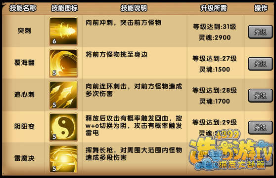

小白龙厉害就厉害在他的技能上，从单个来看是看不出什么，但是当仔细分析时，不得不说，这是一大亮点！
1、突刺
这是一个非常好的技能，逃跑，贴boss的脸专用，当躲完boss的一波攻击时，要跑过去boss很快又会迎来下一次攻击，所以这个时候可以一个突刺冲到boss身边，然后一套技能。
推荐：突刺+覆海翻/追心刺/雷魔决
2、覆海翻
实用性非常高，击飞的技能可以给自己攻击更多的机会，且攻击力不俗。当把敌人挑飞时，正好可以继续丢技能或者来一套普通攻击，大大为自己输出增加了时间。
推荐：覆海翻+覆海翻
3、追心刺
对前方造成多端伤害，可以配合突刺使用，贴到对面身边，一段刺，让对方根本没有还手之力。
推荐：追心刺+追心刺/覆海翻
4、阴阳变
攻击有概率触发回血，这个我没仔细看，大概是回10%还是多少忘记了，反正加的生命也不俗，而切换为阴状态时简直是个恐怖的技能，攻击有概率触发闪电，那个闪电的伤害真的是爆表，不多说。
5、雷魔决
神技能，虽然前期多段伤害很低，但是最后一下的爆发真的惊人，值得一提的是，雷魔决可以配合阴阳变的触发闪电，在雷魔决的时候一堆闪电劈下来，对敌人也是非常高的伤害。
推荐：突刺+雷魔决
